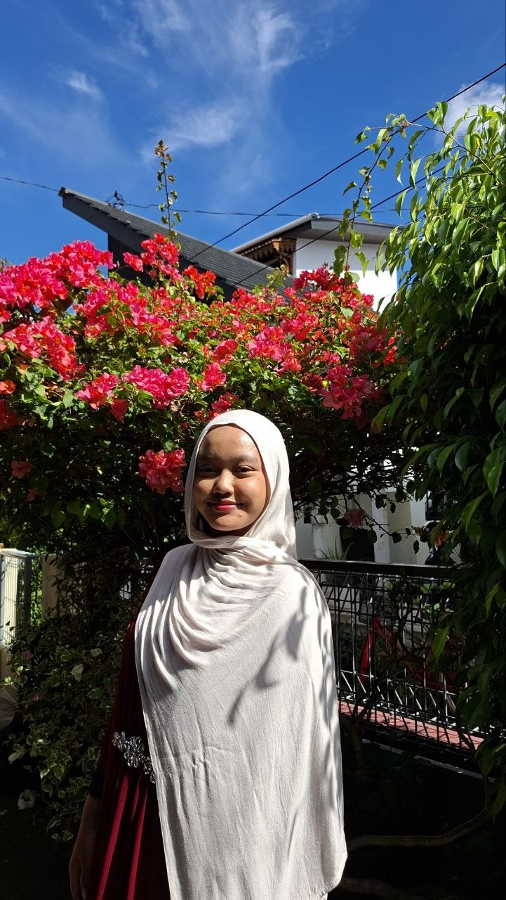

Karya Nyata dari Proses Belajar

Perkenalkan nama saya Aqila Nayyara Rashida dari SMPIT Al Haraki dan saya sekarang duduk di kelas 9 Al Araf.
Saya biasa dipanggil Ayya. Saya anak ke-2 dari 4 bersaudara dan saya dikenal sebagai siswa yang ceria, percaya diri dan ramah. Dengan kepribadian tersebut, saya dapat memberi dampak positif dalam berorganisasi, mengembangkan relasi dan juga memberikan suasana lingkungan yang positif serta supportif.
Saya memiliki minat dalam bidang seni maupun pendidikan. Terutama menggambar dan pembelajaran matematika. Selain itu, saya juga mempunyai bakat dalam berbahasa Inggris, baik dalam menulis maupun berbicara. Bakat tersebut saya terus kembangkan melalui latihan dan juga pengalaman, serta berhasil meraih beberapa kejuaraan berbahasa Inggris di sekolah.
Saya bercita-cita untuk menjadi arsitek. Dengan menjadi seorang arsitek, saya berharap dapat menciptakan bangunan yang tidak hanya unik, tetapi juga memberi dampak positif bagi bumi.
Selama bersekolah di SMPIT Al Haraki, saya berhasil menemukan jati diri saya yang awalnya masih bingung cara beradaptasi dengan lingkungan sampai akhirnya dapat menyesuaikan diri dengan teman-teman sekitar. Banyak sekali kesan bahagia yang saya dapatkan selama bersekolah di SMPIT Al Haraki, mulai dari kelas 7 sampai 9. Saya berharap pengalaman yang telah saya lalui dapat menjadi bekal untuk terus berkembang dan meningkatkan diri.